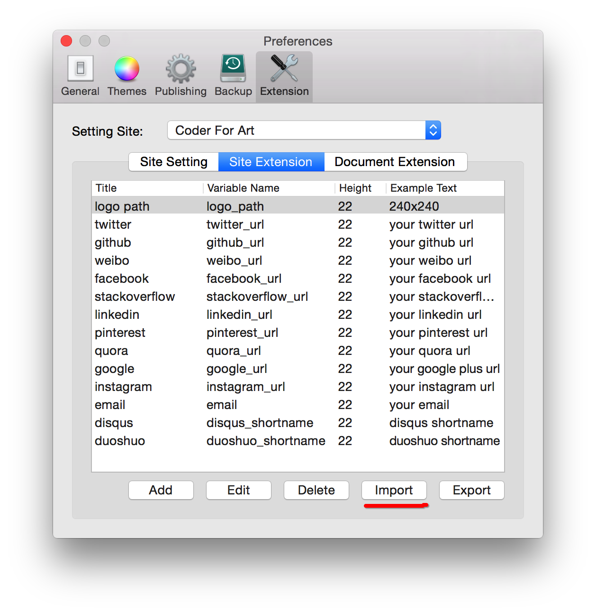

MWeb 1.7 版制作了新的博客/网站主题 mweb-medium-like。这个主题是基于 Foundation 前端框架做的，对移动端非常友好！
本博客的主题也是使用 mweb-medium-like。
使用方法
设置网站为 mweb-medium-like 主题
MWeb 1.7 版会自带 mweb-medium-like 主题，所以先设置你的网站的主题为 mweb-medium-like。 mweb-medium-like 主题也上传到 github 了，你也可以去 https://github.com/oulvhai/mweb-medium-like 看看是否有修正或者提建议。如下图我选择的是 Coder For Art。
导入网站扩展文件和文档扩展文件
下载 Site Extension 这个网站扩展设置文件，在 github 中这个文档在 extensions/Site Extension.json 里。
再转到 Perfernces - Extensions，Setting Site 中选择刚刚设定了 mweb-medium-like 主题的 Coder For Art 网站，然后切换到 Site Extension 标签，点 Import 导入刚刚下载的 Site Extension.json 设置文档。如下图是导入后的效果。

同样也下载 Document Extension 这个文档扩展设置文件，切换到 Document Extension 并导入。
设置网站扩展
网站/博客中往往会有一些个人信息要设定，刚刚导入的网站扩展就是为了设定这些信息的。mweb-medium-like 主题目前可以设定的有：个人图片、weibo、github、facebook、email 等等信息，还可以为网站/博客增加 disqus 和 多说的评论支持。其中 logo path 就是设置个人图片的，你可以在任何属于该网站的文档中（通常可以用 about 或 index）拖入图片，然后复制图片的地址到 logo path 这个字段中，如下图是我的博客 Coder For Art 的设置：
设置 disqus 和多说评论支持只需要填入两者的 shortname 即可。在 disqus 或多说注册完成后都可以得到 shortname。如果你想要两者的评论都支持，两者都填入即可，比如说我的 Coder For Art 博客就是两者的评论都支持，如图：
文档扩展的使用
mweb-medium-like 主题设计了三个文档扩展：small img 用于文章列表时放在描述的左边，featured image 用于放在标题上面，excerpt 为描述，一般情况下 MWeb 是直接抓取文章内 read more 前的内容，如果有填入 excerpt 则会优先取 excerpt 为描述。
如下图第一篇演示文章为设置为 small image 的效果，第二篇文章为设置了 featured image 的效果：
设置 About 页面
mweb-medium-like 主题的主菜单加上了 about 页面，所以请设置一个 about 页面，否则点了主菜单的 about 连接后会出错。如下图是 Coder For Art 博客的 About 页的设置：
其他有意思的玩法
mweb-medium-like 主题是基于 Foundation 做的，然后因为 Markdown 支持 HML，所以如果你会 HTML，可以做出很有意思的效果，比如说：
-
女天狗图 1
-
女天狗图 2
-
女天狗图 3
上面的效果，把图拖拽进来后，再修改图片地址即可。全部 HTML 如下：
<ul class="example-orbit" data-orbit>
<li>
<img src="media/14418505549476/tt1.jpg" alt="" />
<div class="orbit-caption">女天狗图 1</div>
</li>
<li>
<img src="media/14418505549476/tt2.jpg" alt="" />
<div class="orbit-caption">女天狗图 2</div>
</li>
<li>
<img src="media/14418505549476/tt3.jpg" alt="" />
<div class="orbit-caption">女天狗图 3</div>
</li>
</ul>
缩略图效果，点小图看大图，如下：
{kind=link}
{kind=link}
上面的效果的全部 HTML 如下：
<ul class="clearing-thumbs small-block-grid-2" data-clearing>
<li><a href="media/14418505549476/tt4.jpg"><img data-caption="女天狗 4" src="media/14418505549476/tt4-s.jpg"></a></li>
<li><a href="media/14418505549476/tt5.jpg"><img data-caption="女天狗 5" src="media/14418505549476/tt5-s.jpg"></a></li>
</ul>
效果 1 的 Foundation 参考网址：http://foundation.zurb.com/docs/components/orbit.html
效果 2 的 Foundation 参考网址：http://foundation.zurb.com/docs/components/clearing.html